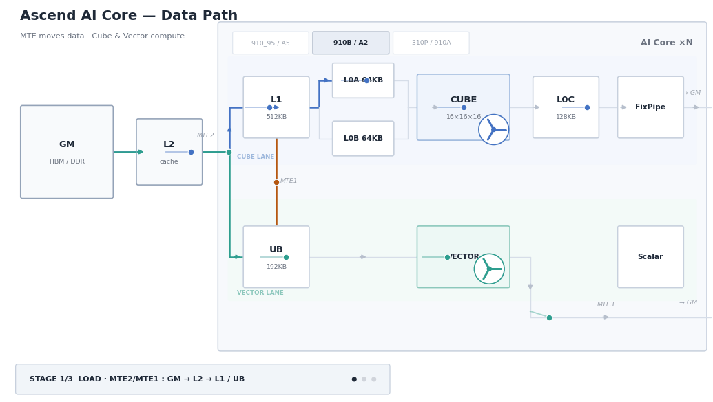

芯片架构与超节点
理解昇腾的一切优化从这张图开始：计算（Cube/Vector/Scalar）、存储（GM→L2→L1→L0→UB 层次）、 搬运（MTE DMA 引擎）三类资源的分工，决定了算子设计的全部约束。图中数值来自本库深读的 910B/A2/A3 抽象架构文档与昇腾 950 架构白皮书。

昇腾 950（第三代达芬奇）
CloudMatrix384 超节点
CANN / HCCL / 图编译
CANN 是昇腾的 CUDA：驱动与运行时之上，图编译（GE/torchair）、算子库、HCCL 集合通信 构成软件栈主体。三份官方手册已逐字入库——其中商用版与社区版环境变量清单的一致性对照是本库独家结论。
环境变量速查（高频精选）
版本对照（本库独家） 机械 diff 实证
CANN 环境变量索引页：商用版 900 与社区版 910beta1 逐行 diff 仅 4 行站内锚点 ID 差异， 变量名/分组/简介逐字相同 —— 环境变量知识可跨版复用。后续版本发布重抓即得增量 diff。
两版清单一致 商用 900社区 910beta1 PyTorch 2600
HCCL 集合通信
通信域创建（基于 root 节点信息）官方指南已入库：建链流程、ranktable 与端口占用规则、 可靠性重传（SDMA/RDMA CQE 错误触发算子重执行，以通信域为粒度）。
算子全景与 AscendC 开发
算子是性能的最后一公里。这里组织三件事：按模型结构域的算子全景（链仓内设计文档）、 AscendC 编程的核心概念体系、以及昇腾算子仓地图。
算子全景（按模型结构域）
Attention 算子
MLA 矩阵吸收 · 稀疏注意力打分 · KDA chunkwise 线性注意力——论文机制与仓内算子设计文档互证。
MoE 算子
dispatch/combine 通信算子 + 专家负载均衡（EPLB）——Megatron-Core MoE 论文 ↔ MindSpeed 特性实现。
Matmul / Cube 算子
Cube 单元模板库：CATLASS（CANN 版 CUTLASS）+ 矩阵分形格式（NZ/分形）与 L0 双输入缓冲的匹配。
量化算子
Attention 量化 · Anti-Outlier 离群值抑制 · 模型压缩工具链（msmodelslim）。
AscendC 核心概念体系
TPipe
统一管理 Device 端内存的调度器，核函数内所有缓冲申请的总入口。
TQue / TBuf
TQue 以队列管理内存（配 EnQue/DeQue 做流水同步）；TBuf 管理临时变量缓冲。二选一是性能 FAQ 高频点。
GlobalTensor / LocalTensor
GM（外部存储）与 Local Memory（核内存储）的张量抽象——所有数据搬运的两端。
double buffer
搬运与计算并行：UB 切两半，MTE 搬下一块的同时 Vector 算当前块。硬件依据 = 三流解耦（见 L6 图）。
tiling 切分
数据分核策略：把大任务切成核内可容纳的块，消除拖尾、对齐 512B 访问。
内存格式
ND / NZ / NCHW / NHWC / NC1HWC0——Cube 友好的是 NZ 分形，TransDataTo5HD 做格式转换。
同步原语
SetFlag / WaitFlag / PipeBarrier——对应硬件的同步信号流；Cube↔Vector 跨核同步是精度 FAQ 之首。
ISA 指令族
数据搬运（DataCopy/DataCopyPad）· 单目（Exp/Ln/Abs）· 双目（Add/Mul/Div…）· 排序选择（Sort32/Select/Gather）· 精度转换。
AscendC API 族全景
| API 族 | 代表接口 | 功能 |
|---|---|---|
| 数据搬运 | DataCopy · DataCopyPad · Copy | GM↔L0/L1↔UB 各通路搬运；DataCopyPad 支持非对齐搬运与填充 |
| 收集/分散/填充 | Gather · Gatherb · Scatter · Duplicate · Brcb · CreateVecIndex | 按偏移地址收集/分散元素；变量广播填充；创建向量索引 |
| 转置/格式 | Transpose · TransDataTo5HD | 16×16 二维块转置；NCHW↔NHWC、NC1HWC0 分形转换 |
| 单目运算 | Exp · Ln · Abs · Reciprocal · Sqrt · Rsqrt · Not · VectorPadding | 按元素一元函数（Reciprocal 精度不满足要求的场景注意） |
| 双目运算 | Add · Sub · Mul · Div · Max · Min · And · Or · MulAddDst · FusedMulAdd | 按元素二元运算，单迭代处理 PAR 个元素 |
| 标量双目 | Adds · Muls · Maxs · Mins | 矢量与标量逐元素运算 |
| 比较 | Compare · CompareScalar | 逐元素比较（LT/GT/GE/EQ/NE/LE），结果写比特位 |
| 选择 | Select · GatherMask | 按掩码比特从两源操作数选取元素 |
| 排序组合 | Sort32 · RpSort16 · ProposalConcat · ProposalExtract · MrgSort | Sort32 一次迭代排 32 个数（score+index 结构 8B） |
| 精度转换 | Cast 族 | dtype 间转换（fp16/fp32/bf16/int8…） |
算子仓地图
训练与推理框架
训练看 MindSpeed 家族（对位 Megatron），推理开源看 vllm-ascend、商用看 MindIE—— 全部仓带版本血缘，特性文档七节深读在册。
MindSpeed 训练家族 v26.1.0_core_r0.12.1
- fb-overlap：MoE 前反向 AllToAll 通信掩盖（特性深读 + 3 图图文联合解读）
- 版本命名规则：
<产品版>_core_r<Megatron-Core 兼容版>（26.1.0 配套 MCore 0.12.1） - 家族：mindspeed / mindspeed-llm / mindspeed-mm / mindspeed-rl / mindspeed-ops / mindspeed-bridge / megatronadaptor / transformerenginenpu
vllm-ascend v0.25.1rc1
- vLLM 的昇腾官方后端；仓内藏算子级设计文档（ChunkKdaFwd / SparseAttentionScore）
- 特性教程深读：PD 分离（Mooncake 多机） · 动态 chunked 流水并行
MindIE 商用推理栈 3.1.0
- mindie-llm（引擎）· mindie-turbo（加速）· mindie-motor（集群编排）· mindie-sd（多模态）
- 特性深读：架构设计 · 异步调度 · Attention 量化
xLLM v0.10.1
- 京东开源推理框架；GLM-5.3-Flash day-0 适配时间线已记入仓卡片（版本血缘实例）
- 特性深读：PD 分离设计 · chunked 调度
模型算法的昇腾落地映射
每个算法在这里回答一个问题：落到昇腾需要哪些算子、哪个框架已支持。 论文机制深读在主书架，本页给落地映射。
| 算法 | 论文深读 | 昇腾算子需求 | 落地证据 |
|---|---|---|---|
| KDA（Kimi 线性注意力） | Kimi Linear · GDN | chunkwise 线性注意力 + 并行 scan | ChunkKdaFwd 设计文档 · 并行 scan 论文 |
| DSA（DeepSeek 稀疏注意力） | DeepSeek V4 | 稀疏 gather / index 算子 | SparseAttentionScore 设计 |
| MLA（低秩注意力） | DeepSeek V3（架构裁剪图） | 矩阵吸收 + 大 Cube 吞吐 | MindSpeed / vllm-ascend 均支持（标杆适配模型） |
| MoE | Megatron-Core MoE | dispatch/combine 通信算子 + EPLB | fb-overlap · EPLB |
| FP8 训练 | DeepSeek V3 §FP8 | 原生 FP8(E4M3/E5M2/HiF8) | 910C 不原生支持（需 PTQ 补偿）→ 950 原生支持（见 L6） |
| 投机解码（EAGLE 族） | 主书架投机解码簇（10+ 篇） | 草案树注意力 + 采样算子 | vllm-ascend 实验性支持 EAGLE3 |
{kind=link}
昇腾 Agentic / RL
Agent 系统的昇腾落地当前以 RL 训练栈为主；Agentic 算子生成是 GPU 侧前沿、昇腾侧方法论可平移的方向。
RL 训推耦合（论文层）
AREAL 异步 rollout · HybridFlow 训推解耦 · DeepSeek-R1 GRPO——方法论对昇腾 RL 栈直接有参考价值。
Agentic 算子生成（前沿）
CUDA-Agent（Agentic RL 生成 CUDA kernel）的方法论可平移到 AscendC 算子生成——昇腾侧尚无对应系统，是机会窗口。
算子精度与性能方法论
昇腾算子开发的两套社区方法论（整理自昇腾官方教程与算子开发实践）—— 精度问题 12 步定位 + 性能优化 12 步，与本库深读资产互补。
12 步搞定算子精度问题
① 开日志重跑 ② 搜索案例库 ③ 检查标杆和过程（排除低级错误） ④ 定性问题类型（功能 or 时序/同步/竞争）⑤ 用例特征分析（同类归类+正反比较） ⑥ 增加必要的校验（入参与 tiling）⑦ 最小代价稳定复现 ⑧ 错误数据特征分析 ⑨ 对比找差异（不同版本/用例）⑩ 调试 & 借助工具 ⑪ 积极求助 & 风险上报 ⑫ 整理问题过程和刷新案例
12 步搞定算子性能优化
① 先度量后优化（profiling，避免经验主义）② 最大化利用 UB（大块优先） ③ 开启 double buffer（搬运与计算并行）④ 定界/聚焦耗时大头 ⑤ 优先大块+对齐（GM 访问 512B 对齐） ⑥ 高效的 tiling 切分（消除拖尾）⑦ 简化计算公式/逻辑 ⑧ 合理的流水排布 ⑨ 消除冗余逻辑 ⑩ 固化标准计算块 ⑪ 缓存高效利用（L2/L1/UB + cacheline） ⑫ 该收手时就收手（建立性能理论评估机制）
优化小技巧
谨慎使用 Alloc/Free/EnQue/DeQue（延迟申请、用完立即释放）· TPipe 外置（创建外置到核函数，引用传递）· FixPipe 随路量化（Cube 核随路量化）· 空间换时间。
FCodeQ 高频问答
Cube↔Vector 同步：ffts_cross_core_sync（Cube 侧，PIPE 按需选 MTE3 拷出/MTE2 拷入触发）
配 wait_flag_dev（Vector 侧等 flag）·
TQue→TBuf：TBuf 管临时缓冲、无 EnQue/DeQue 同步语义 ·
310P DataCopyPad：无此接口，需手工补对齐搬运+填充 ·
高性能转置：Transpose（16×16 块）/ TransDataTo5HD，配 NZ 分形格式。
知识对照表（概念 ↔ 本页可视化 ↔ 深读 ↔ 仓实现）
同一概念在本页的图形化呈现、本库的机制深读、仓内的实现锚点三方互证。
| 概念 | 本页可视化 | 本库深读 / 手册 | 仓实现锚点 |
|---|---|---|---|
| double buffer（搬运/计算并行） | L6 架构图 · 三流解耦 | fb-overlap 特性深读 | MindSpeed 原始文档 |
| 通信掩盖流水 | L6 数据通路 | DeepSeek-V3 DualPipe 深读 | MindSpeed fb-overlap 实现 |
| 线性注意力算子（KDA/GDN） | L2 落地映射表 | Kimi Linear 深读 | ChunkKdaFwd 原始设计 |
| tiling 切分 | L4 概念卡 | CANN 手册（编译/执行条目） | catlass 仓 |
| 集合通信 HCCL | L5 软件栈分层 | HCCL 通信域指南 | hccl_transfer 仓 |
| Cube/Vector 双单元 | L6 AI Core 架构图 | 抽象硬件架构深读 | catlass（Cube 模板） |
| 超节点组网 | L6 CloudMatrix 卡片 | CloudMatrix384 深读 | HCCL 超节点环境变量 |
昇腾仓全景（134 仓 · 版本血缘在册）
按技术族分组；每仓有机械层卡片（版本/tag/结构），重点仓有分析层卡片与数十到数百篇文档深读。 完整可检索清单见 repo_deep_index.json 与各仓卡片。
MindSpeed 训练家族（10）
mindspeed · mindspeed-llm · mindspeed-mm · mindspeed-rl · mindspeed-ops · mindspeed-bridge · mindspeed-agent · mindspeed-core-ms · megatronadaptor · transformerenginenpu
MindIE 推理家族（5）
mindie-llm · mindie-turbo · mindie-motor · mindie-motor-cpp · mindie-sd
推理引擎与后端（9）
vllm · vllm-ascend · xllm · xllm_ops · xllm_atb_layers · text-embeddings-inference · mindinferenceservice …
算子与编译（21）
triton-ascend · catlass · torchair · op-plugin · apex · tilelang-ascend · ascend-transformer-boost · tvm …
通信与存储（8）
hccl_transfer · memfabric_hybrid · memcache · parakv · mooncake · tensorpipe · transferqueue · brpc
集群管理与部署（9）
mind-cluster · mindcluster-deploy · ascend-deployer · ray-ascend · slime-ascend · fsdpturbo …
调优与工具链 msIT/mstt 族（24）
msit · mstt · msprof · msdebug · msprobe · msmodelslim · msserviceprofiler …
模型套件与行业 SDK（27）
modelzoo 族 · recsdk · visionsdk · ragsdk · multimodalsdk · agent-skills · docs …
三方依赖镜像（21）
cutlass · faiss · flashinfer · sentencepiece · composable_kernel …
共同缺口（待补）
达芬奇架构手册（2026-09-04 关闭：agent-skills 仓抽象硬件架构深读覆盖，见 L6 图出处）HCCL 使用指南（2026-09-04 关闭：通信域创建指南页已入库深读，见 L5）- MindIE vs vllm-ascend 选型对照（官方无此页，需自建或找第三方权威分析）
- HCCL vs NCCL 接口语义对照（待权威来源）
- CANN 软件栈分层官方总览（当前 L5 分层图为本页自绘，待官方图对照）